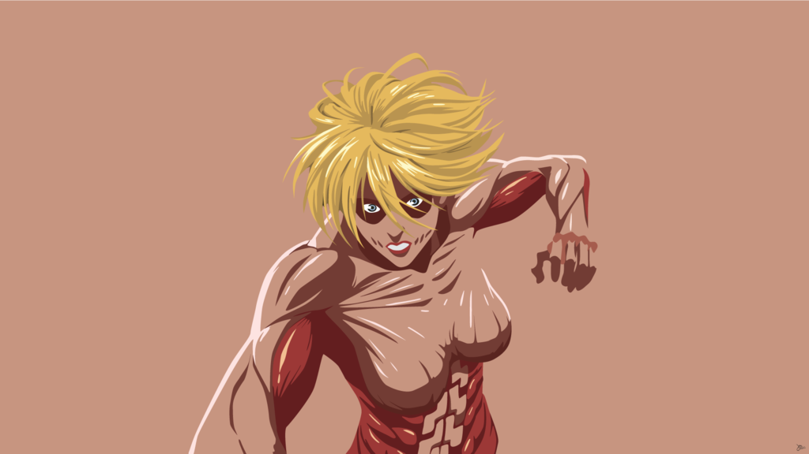

Fue la recluta de la Tropa de Reclutas del Ciclo Nº104, cuarta en el top 10 de su clase y una ex-miembro de la Policía Militar. Ella, al igual que Reiner Braun y Bertolt Hoover, poseía la habilidad de transformarse en un titán y servía a una unidad de soldados de Marley conocidos como guerreros. En el año 845, ella se infiltró en las murallas con la misión de encontrar y tomar el poder del Titán Fundador. A diferencia de los otros titanes cambiantes, la apariencia de Annie en su forma de titán no difiere mucho de la humana, sobre todo en lo que respecta al área facial. Su cabello ya no está atado en su usual moño, pero continúa siendo rubio y cubre todo su rostro. Su cuerpo está compuesto principalmente por músculo expuesto, con una cantidad mínima de piel a través de su cuerpo. Annie sufre de un aumento masivo de estatura, llegando a medir 14 metros. Annie es solitaria y poco amistosa. A menudo es apática y somnolienta, con poco deseo de esforzarse en cualquiera de las disciplinas o actividades comunes que ella considera "sin sentido", y en su lugar se centraba exclusivamente en llegar a ser parte de la Policía Militar para obtener una vida fácil. Sin embargo, de alguna manera parece sentir una extraña fascinación por las personas que tienen un profundo sentido del deber y la justicia, aquellos que se preocupan y que pueden dedicar sus vidas e incluso morir por causas nobles; Eren, por ejemplo. Al ser entrenada desde niña por su padre, Annie ha demostrado ser experta en diversas artes marciales, siendo su principal forma de defenderse. Una muestra de esto es una técnica de patadas que utilizó para derrotar a Eren y Reiner durante el entrenamiento.
